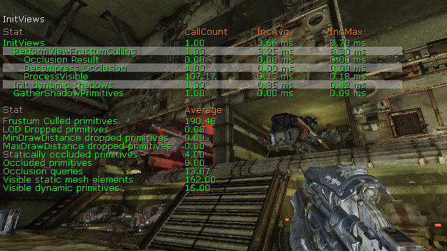
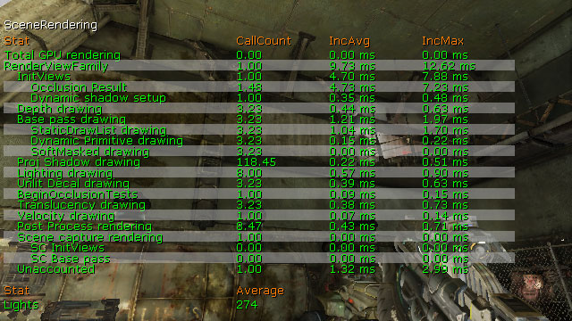
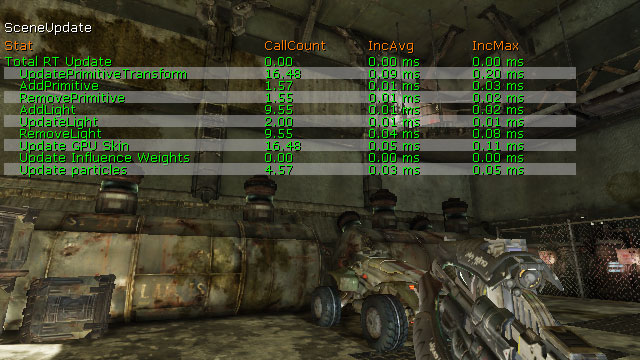
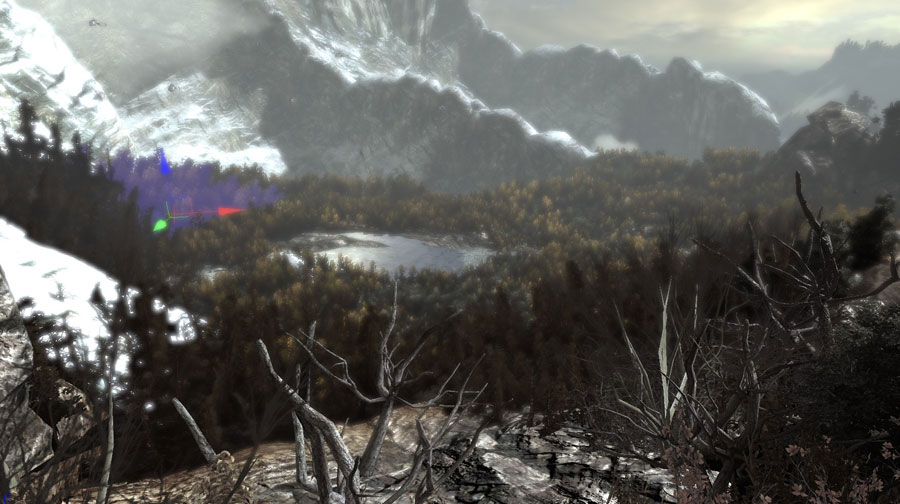
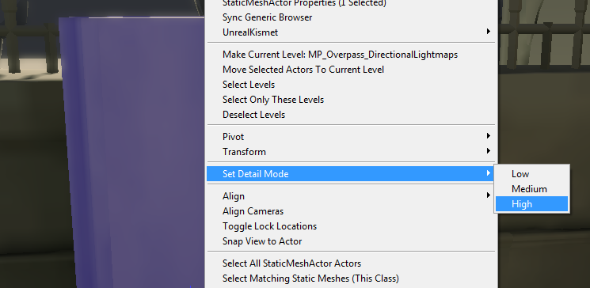

UDN
Search public documentation:
RenderThreadProfilingHome
日本語訳
中国翻译
한국어
Interested in the Unreal Engine?
Visit the Unreal Technology site.
Looking for jobs and company info?
Check out the Epic games site.
Questions about support via UDN?
Contact the UDN Staff
中国翻译
한국어
Interested in the Unreal Engine?
Visit the Unreal Technology site.
Looking for jobs and company info?
Check out the Epic games site.
Questions about support via UDN?
Contact the UDN Staff
UE3 Home > Performance, Profiling, and Optimization > Render Thread Profiling and Optimization
Render Thread Profiling and Optimization
Overview
Render Thread Profiling
- Trace Render will do a single frame trace (this is good if you can get to an area that is especially poor performance)
- Sample Profiling: Is great when you have sort of run of the mill performance and not real spikes.
STAT SCENERENDERING
The STAT SCENERENDERING command shows general rendering statistics. This is a good starting point to find general areas of slow performance in the rendering process. STAT INITVIEWS
The STAT INITVIEWS command displays information on how long visibility culling took and how effective it was. Visible section count is the single most important stat with respect to rendering thread performance, and that is dominanted by Visible Static Mesh Elements underSTAT INITVIEWS, but Visible Dynamic Primitives also factors in.

STAT SCENEUPDATE
The STAT SCENEUPDATE command displays information about updating the world, including the time taken to add, update, and remove lights as well as add and remove primitives in the scene. Sample Workflow
- Run
Stat unit- shows the render thread is taking 50 ms.
- Then run
stat scenerendering- shows that 25 ms is in the RenderViewFamily
- leaving us with 25 ms that the render commands are taking up
- Finally, run
stat sceneupdate- we see that there is 25 ms in AddLight RT
- we see that it is being called 10 times a frame
- We then need to go look at who is calling AddLight via a break point. And see why adding a specific light or lights is so slow. Usually it is the case that a specific light being added in a way that is doing more work than actually needs to be done. (e.g. attaching / reattaching it)
Render Thread Optimization
Level Layout
The biggest factor in level design as far as the RenderThread is concerned is visibility and how it affects the number of visible elements. Levels designed to make use of occlusion efficiently will have a better chance of limiting the numbe rof elements visible at any one time. For single player gameplay, implementing a zigzag flow through the map will allow the occlusion features in Unreal Engine 3 to work to their fullest ability. See the VisibilityCulling for information on the available culling methods in Unreal Engine 3.Content Makeup
In addition to level layout, how the meshes used are made up is also important. There’s a trade-off that has to be made in this area, on one extreme you can use lots of tiny reusable meshes that kill the rendering thread, and on the other extreme you can use fewer large meshes that aren’t reusable. To get an idea of where to strike the balance, you can look at shipped GOW/UT3/GOW2 levels to see what has worked. The best POC though is to actually setup test levels that are representative of what you are trying to make and profile on your target platform(s). Vistas where you see a large area can be a big problem if section count is not carefully controlled. SP_Assault in Gears2 is a great example of an efficient vista, many trees are merged into single meshes (as you can see in the selection) which keeps the section count low. This technique only works if the player can never get over to the distant part of the Vista though. If the player can get over there, a more aggressive LOD system needs to be used. Reduce Fidelity
For splitscreeen, the renderthread does many things twice as you have two different views into the world. Usually the game is running at max possible speed in SinglePlayer so when you double the workload something has to give. Finding areas to reduce fidelity which do adversely affect the game is key. You will probably be required to write special code in a number of cases as usually GamePlay code is in charge of spawning objects / creating effects. For some systems in the engine there are settings which can be set, but for the most part it is all about identifying areas and turning them off / reducing the amount. Key areas where fidelity can be reduced are:- Decals: Reduce the max number that are alive at once
- Duration Objects Live: Reduce the lifetime of effects type objects (e.g. Gibs)
- Reduce the number of Decals that can be attached to SkeletalMehes
- For AI characters, don't do many visual things (e.g. you are playing Horde. No need for each bullet impact to have a blowout decal spray or effect)
Splitscreen Detail Mode
As a last ditch effort it is useful to use the detail mode feature to select meshes which will not be drawn in split screen. For Gears 2 a pass was done over all multiplayer maps and marked visual-only detail meshes as High detail.  Once the high detail pass was complete, the detail mode setting for splitscreen is set:[SystemSettingsSplitScreen2] DetailMode=1This setting means those meshes set to high detail mode will not be drawn or have any rendering overhead in split screen.